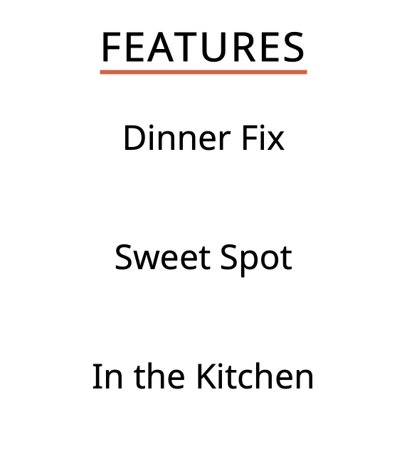
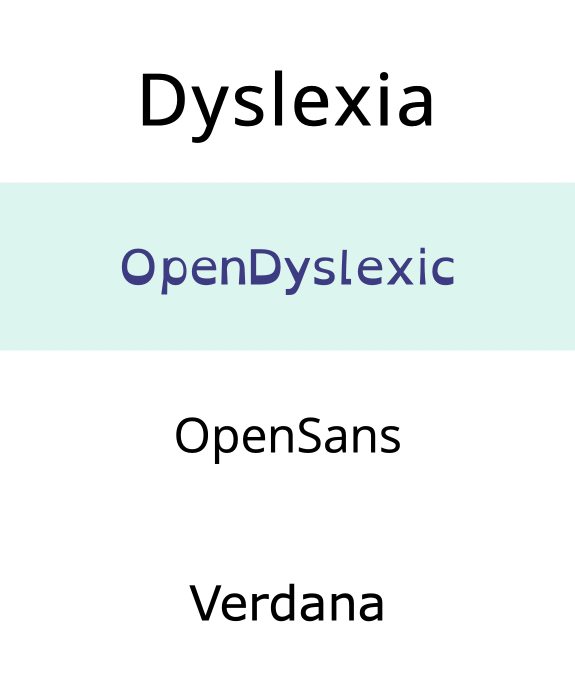
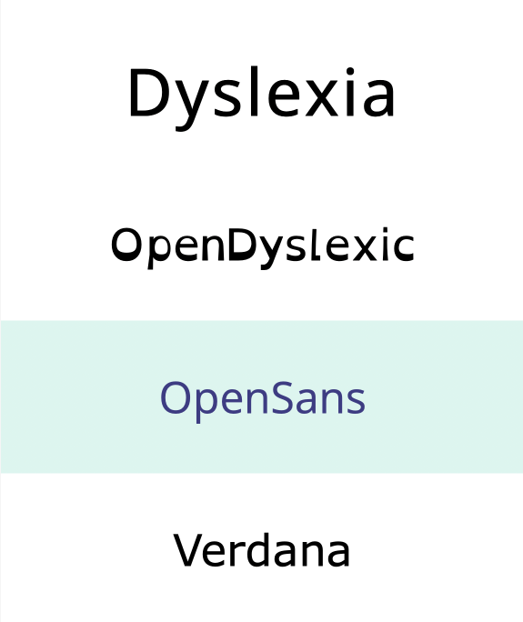

OVERVIEW
Incorporating the skills learned in the coding classes from previous years, we were tasked to build a microinteraction based on a website that already exists. Grabbing inspiration from a popular recipe website with culinary tips and recipes, AllRecipes, I chose to improve the category tab dropdown menu on the top of the page and below the central navigation bar.
The current design lacked the transition of the dropdown menus; the entire block of the subcategories would show up instantaneously after hovering over the category title. After 10 weeks and different stages of the project, I was able to design and code a microinteraction that enhanced the dropdown menu using HTML / CSS and Javascript.
CONTEXT AND CHALLENGE
Seeing this opportunity to create a microinteraction that could highlight my passion in accessibility, I designed and coded a dropdown menu on my own that would educate others on the different types of fonts that would be easier for those who are neurodivergent, specifically for those on the spectrum of Dyslexia, to read on websites and other platforms. Trying to accomplishing different stages of designing and building this project out in a 10-week course, every week was a step further to fleshing this out.
Using AllRecipes’ already working microinteraction, I wanted to improve the functionality of it in my own microinteraction with more triggers and unique details that would make it more interesting and more appropriate for my purpose. The problem of the pre-existing microinteraction on AllRecipes’ website was that it is boring and that the subcategories would instantaneously appear when one’s mouse is hovering over the category tab. Along with that, the underline under the category tab would instantly appear as well. The background box of the subcategories would also spill over to where the other category’s subcategories would be listed as well, creating an unpleasant imagery of unevenness. Due to the different categories being different lengths based on how many letters are in the category name, the background box of the subcategories could completely take over the space of where the next subcategories would be when on hover. It could confuse the users further due to the overlapping of space due to the background of the subcategories.
GOALS
- To smoothly animate the transitions of the subcategories when the main category label is hovered on
- To incorporate a quirky way of visually signalling that the users are hovering on the subcategory and when it is being selected / clicked on
- To have sample text below the microinteraction change fonts when the fonts are being clicked on, to show the similarities and differences and the importance of font choice for an accessible website
- To educate users on the different types of fonts that would be easier for those who are neurodivergent, specifically for those on the spectrum of Dyslexia, to read on websites and other platforms
PROCESS AND INSIGHT
Through different stages, I was able to slowly develop and think out how I wanted my accessibility-focused microinteraction to be like. From the start, I knew that I wanted to make my own microinteraction, rather than improve AllRecipes’. Through 7 stages, brainstorm, alpha description, alpha build, beta description, beta build, final description and final build, the Dyslexia menu went through different ideations and versions before it reached its final product.
In the brainstorming stage, I played around with the original interface and its microinteraction.
In the alpha description phase, I still went with AllRecipes’ colour palette of the white, burnt orange and yellow, and its original category label and subcategories. I wanted to take it step by step, so I wireframed the microinteraction by showing the underline gradually traveling under the word “Features” from the start of the word until the end of the word. Also, I showed that the subcategories file in one by one through animation.
In the alpha build phase, I focused on the underline underneath the word “Features” on hover and the subcategories of filing in one by one through animation transitions. At that point, I was still getting back into the rhythm of school and getting used to coding after not touching it for a few weeks. I had one trigger, which was to hover on and off the “Features” tab on the menu. Then the underline would travel from left to right of the word on hover and the underline would return to its original position when the mouse is off hover.

In the beta description phase, I centered my attention on how the users would know when the specific font was being hovered and selected on. I changed the colour palette to a colour combination that would be soothing and contrasting-enough from other colours, keeping in consideration of the accessibility goal of this project. Along with that, I changed the main category label to Dyslexia and the subcategories to the fonts that have been researched to be most helpful for those with Dyslexia. What was difficult was that I would find ideas to try to depict in my beta description, but it would be coded from Bootstrap, or J-Query or others. In other words, languages I did not learn and would not have enough time to learn. It was something I needed to change for the beta build.
In the beta build phase, the alpha’s structural designs and code were transferred over into the beta build, but the Dyslexia category label and the subcategory fonts were incorporated into this build. The subcategory background would fill in with a muted cyan as the colour of the font word would change from black to royal purple when hovered on. Despite attempting to code when a user clicks on the font name the font word would bold, the change was not significant enough for the users to notice. However I saved that for the final description and build.


SOLUTION
For the final description, I needed a total of 5 triggers, which I struggled to find and code. I had almost forgotten that I wanted to have sample text below the menu in a default font; when the users click on a subcategory font name, the sample text would change to the actual font selected!
Incorporating that in and changing a lot more, the final build contained a menu with the category label of “Dyslexia” and the subcategories of different fonts that I had originally chosen. Due to my limitations of coding knowledge and time, I had to choose Google fonts so that I could code font weights and font sizes. I also had added in a “RESET” button to allow the users to see the difference between the font that is not as dyslexic-friendly versus the other fonts in the dropdown menu that are more dyslexic-friendly.
Altogether, these designs, triggers, and code contribute to a delightful and pleasant design that is accessibility-focused with genuine intention to educate others on the fonts that are easier to read for those who are dyslexic that do not distract or impair non-dyslexic people from reading the same exact text.
RESULTS
I found this project to be a success in some way, but also a learning opportunity in another way. Not only did I strengthen my HTML / CSS and JavaScript usage and knowledge, but it also allowed me to create a meaningful microinteraction that was centered around something I am passionate in. Not only did I meet my goals, but I also found alternative solutions to the issues even after trying to stick with my original plan. I would want to make more changes to improve this microinteraction for the future and maybe even do some user testing on it. I am excited to have this on my portfolio and would love to receive feedback on how to improve this.